Pregnancy can sap your energy, but regular bouts of exercise will help you get through your day. And the good news is that you can safely start an exercise program during pregnancy even if you've been an avid couch potato until now. Learn more about the best exercise programs for pregnancy.
10 rules of safe pregnancy exerciseLearn more
1. Check with your healthcare provider first
Always check with your healthcare provider before starting, continuing, or changing an exercise routine. If you exercised regularly before getting pregnant and your pregnancy is uncomplicated, you can probably continue working out as before, with a few modifications (noted below). However, in some cases it's not okay to exercise during pregnancy, so talk to your provider about your fitness routine to make sure your activities don't put you or your baby at risk. If you didn't work out much before conceiving, see our pregnancy exercise guide for beginners, and talk to your healthcare provider about starting an exercise routine
2. Get enough calories
Exercise burns calories, so be sure to eat well to nourish and strengthen your body. When you're pregnant, you naturally gain weight as your baby grows. The amount you need to gain varies based on your pre-pregnancy weight.
If your body mass index (BMI) is in a healthy range (between 18.5 and 24.9), you'll need to eat about 340 more calories a day in the second trimester than before you were pregnant and about 450 more calories a day in the third trimester – and possibly more than that depending on your exercise routine. If you're underweight or overweight, you may need to gain a little more or less than someone with a healthy BMI and adjust your calorie intake accordingly. Your doctor will monitor your weight as your pregnancy progresses and can help you keep your weight gain on track.
3. Warm up
Warming up prepares your muscles and joints for exercise and increases your heart rate slowly. If you skip the warm-up and jump into strenuous activity before your body is ready, you could strain your muscles and ligaments and have more aches and pains after your workout. A good way to warm up is to start your chosen activity at a low intensity and slowly increase it during the first five to eight minutes. This prepares the muscles you'll be using for more vigorous movement. For example, if your workout is walking, go slowly for the first few minutes and gradually pick up the pace.
4. Don't lie flat on your back
After the first trimester, avoid exercising while lying flat on your back. The weight of your uterus puts pressure on a major vein called the vena cava, which can reduce blood flow to your heart and may diminish blood flow to your brain and uterus. This can make you dizzy, short of breath, or nauseated. Some women are comfortable in this position well into their pregnancies, but this isn't necessarily a good indication of whether blood flow to your uterus is affected. Putting pillows or a foam wedge behind your back to prop up your upper body while you exercise enables you to be almost flat on your back without compressing the vena cava.
5. Wear the right clothes
Wear loose-fitting, breathable clothing. Dress in layers so it's easy to peel off a layer or two after you've warmed up or if you get overheated. Make sure your maternity bra is supportive enough, and choose athletic shoes that fit properly. If your shoe size has changed because of mild swelling, stash away your pre-pregnancy sneakers and buy a new pair. You may want to swap out the liners they came with for gel liners that provide better shock absorption.
6. Drink plenty of water
Drink water before, during, and after exercising. Otherwise you can become dehydrated, which can set off a chain of events that leads to a reduced of amount of blood reaching the placenta. Dehydration can also increase your risk of overheating or even trigger contractions.
7. Keep moving
Remaining motionless or standing in one place for prolonged periods – when you're lifting weights or doing yoga poses, for example – can reduce blood flow to your heart and uterus and cause blood to pool in your legs, lowering your blood pressure and making you dizzy. Keep moving by switching positions or walking in place.
8. Make it a habit
Make a commitment to exercise regularly. Keeping up a routine is easier on your body than long periods of inertia interrupted by spurts of activity. According to the American College of Obstetricians and Gynecologists, you can safely do at least 20 to 30 minutes of moderate exercise on most or all days of the week as long as you have the go-ahead from your healthcare provider.
9. Cool down
At the end of your workout, walk in place for five to 10 minutes and do some pregnancy-friendly stretching. This improves your flexibility while getting your heart rate back to normal. Stretching also prevents sore muscles.
10. Get up from the floor slowly
Your center of gravity shifts as your belly grows, so it's important to take extra care when you change positions. Getting up too quickly can make you dizzy and may cause you to lose your footing and fall.
10 exercise to avoid during pregnancyLearn more
1. Bicycling
Cycling isn't a good idea for newbies, but experienced riders may be able to continue until their second trimester, when a shifting center of gravity affects balance and can make cycling dangerous. Riding a stationary bike is a safe alternative
2. Diving
It can be harmful to your baby to hit the water forcefully.
3. Gymnastics
Again, there's a risk of falling and an increased chance of trauma to your abdomen.
4. Horse Riding
Even if you're a good rider, it's not worth risking a fall. If you're experienced, walking around on the horse in the beginning of pregnancy is about as far as you should take it
5. Running
If you weren't a runner before you got pregnant, now's not the time to take it up. Otherwise, it's fine in moderation. From your second trimester on, when the risk of falling increases, you should run with caution. As with all forms of exercise, avoid becoming overheated, and drink plenty of water to replace fluids lost through sweating.
6. Scuba Diving
This is an absolute no. As you surface, air bubbles can form in your bloodstream, which can be very dangerous for both you and your growing baby.
7. Surfing
Same risk of falling and increased chance of trauma to your abdomen.
8. Contact sports
basketball, volleyball, and hockey put you at a high risk of injury from a ball or puck, a collision with another player, or a fall during play.
9. Hot Tubs
Soaking in hot tubs and Jacuzzis or sitting in a sauna can be dangerous to your developing baby because overheating has been linked to birth defects.
10. Tennis
A moderately paced game of tennis is okay if you played before you became pregnant. But you may have problems with balance and sudden stops, so watch your step. Most women find that it's hard to keep up their game as their bellies get bigger in the second and third trimesters.
When To Stop ExercisingLearn more
1. Vaginal Bleeding
2. Painful Contractions
3. Fluid Leaking From Vagina
4. Dizziness Or Fainting
5. Headache
6. Chest Pain Or Heart Palpitations
7. Blurred Vision
8. Pain In The Abdomen
Exercise is so beneficial that the American College of Obstetricians and Gynecologists recommends that healthy women with uncomplicated pregnancies aim to exercise at least 20 to 30 minutes a day with moderate intensity on most or all days of the week. The ideal workout gets your heart pumping, keeps you limber, manages weight gain, and prepares your muscles to handle the physical demands of pregnancy and the postpartum period without causing undue physical stress for you or the baby
Workouts For Moms-To-BeLearn more
Yoga
Yoga can maintain muscle tone and keep you flexible with little, if any, impact on your joints. But to give your heart a workout, you may have to add a walk or swim several times a week.
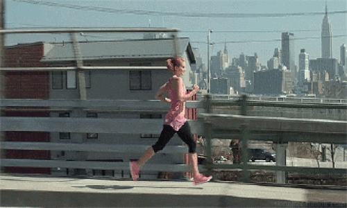 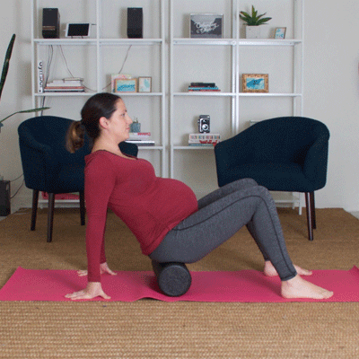
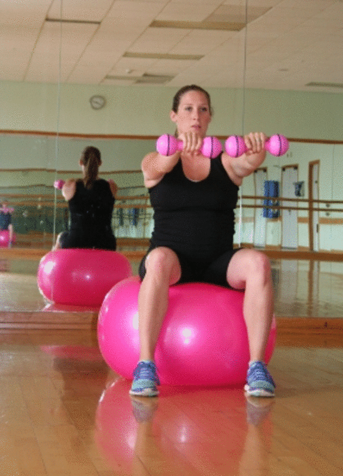 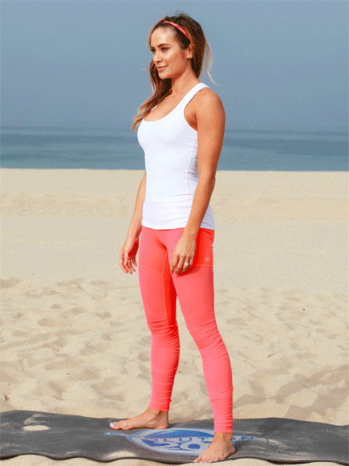
Stretching
Stretching is a great way to keep your body limber and relaxed as well as prevent muscle strain. Add stretching to your cardiovascular exercises to get a complete workout.
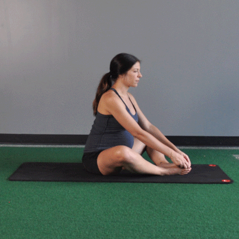 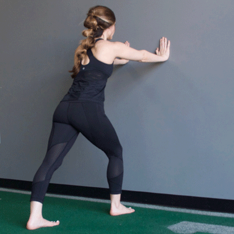
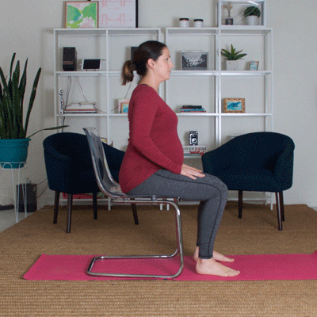 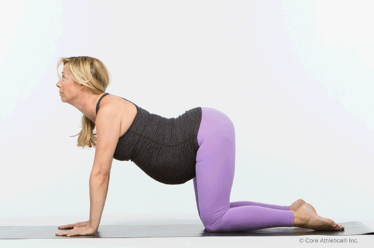
Weight Training
As long as you take the necessary precautions and use good technique (meaning slow, controlled movements), weight training is a great way to tone and strengthen your muscles. Building strength during pregnancy will help prepare you for all the baby lifting you'll be doing soon!
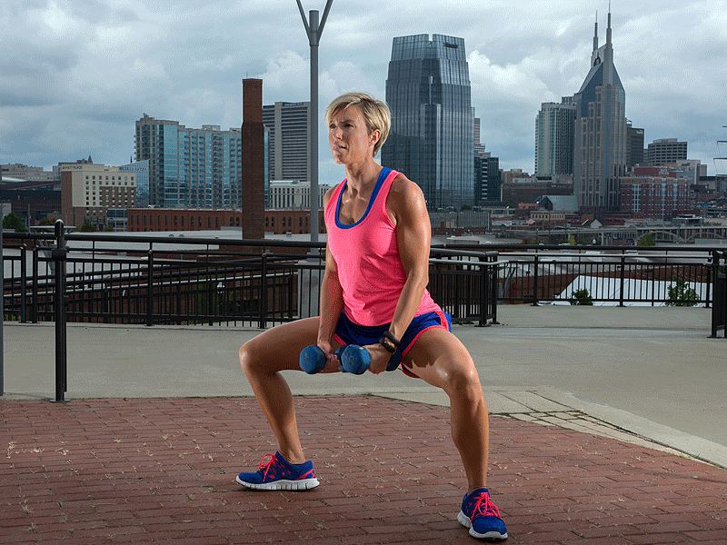 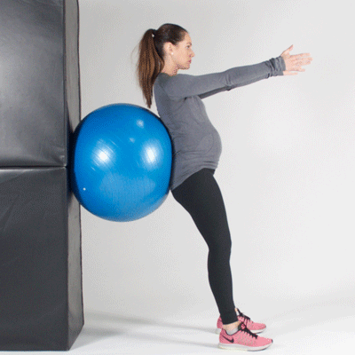
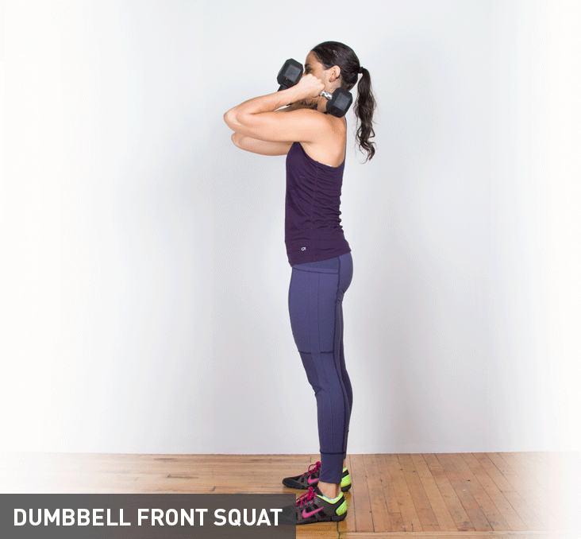 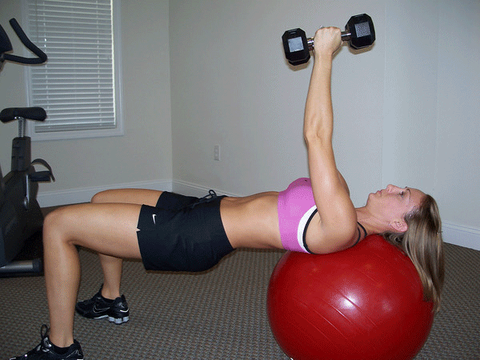